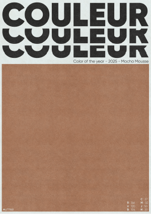

COULEUR
Une teinte douce, chaude, familière. Derrière ce brun subtil baptisé «Mocha Mousse», c’est une carnation que l’on célèbre : celle d’un monde métissé, riche de nuances et d’héritages. L’affiche détourne les codes des tendances chromatiques pour en faire un manifeste silencieux, mais puissant : en 2025, la couleur à la mode, c’est celle des peaux mêlées.